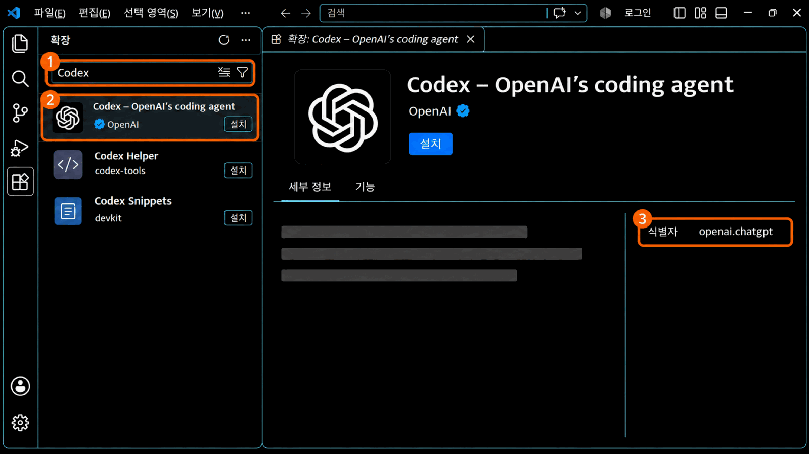
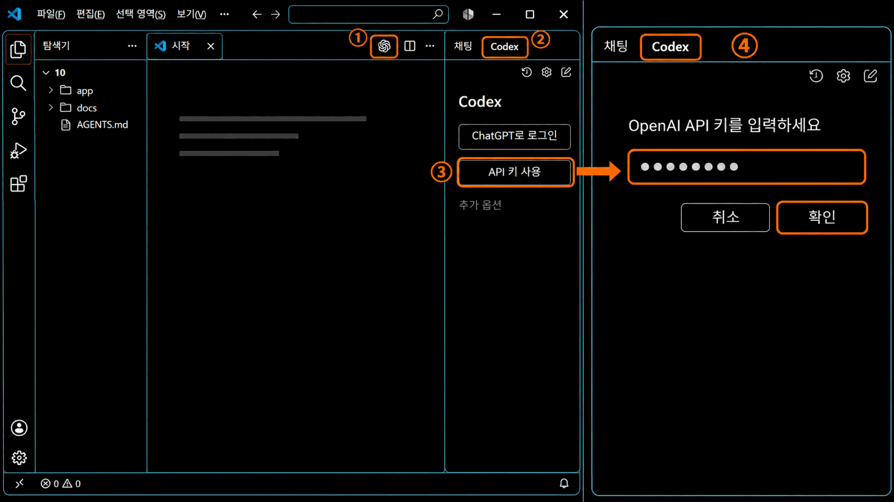
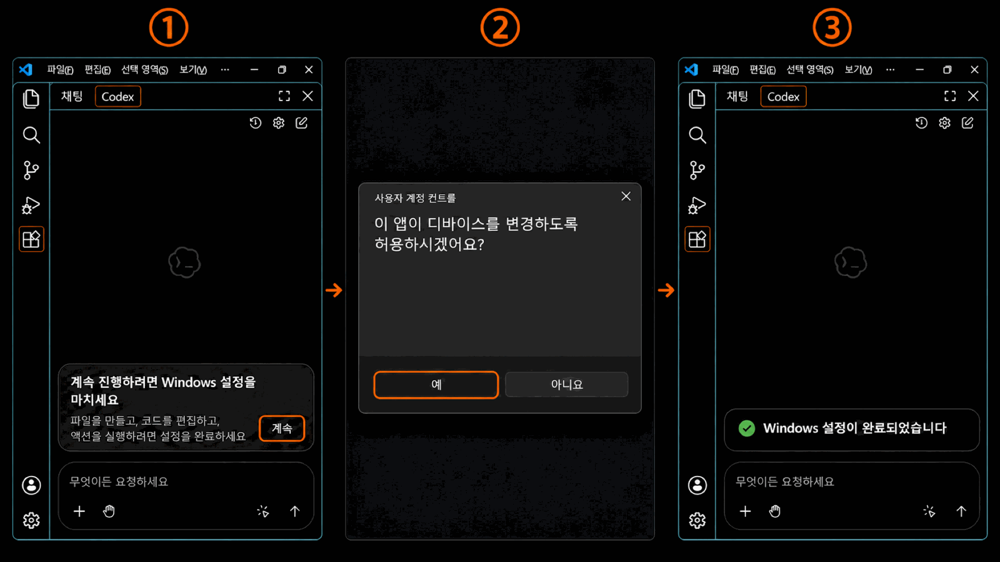
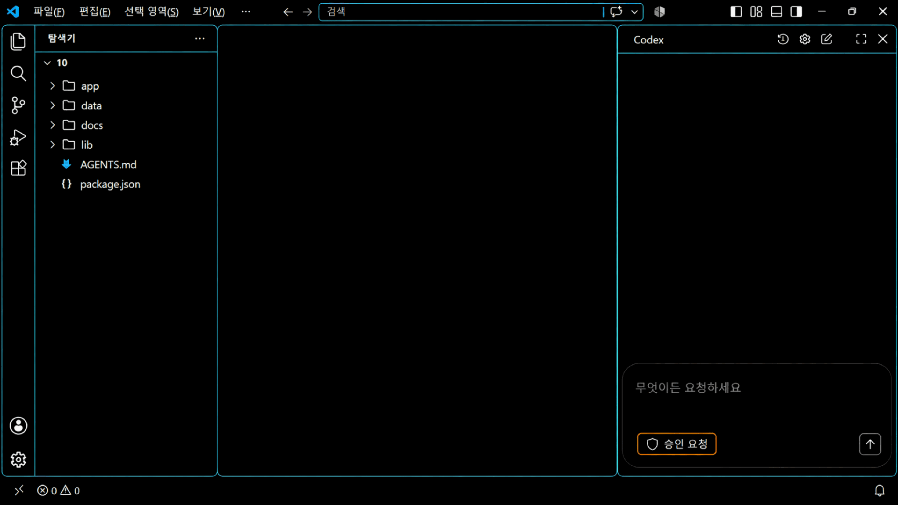
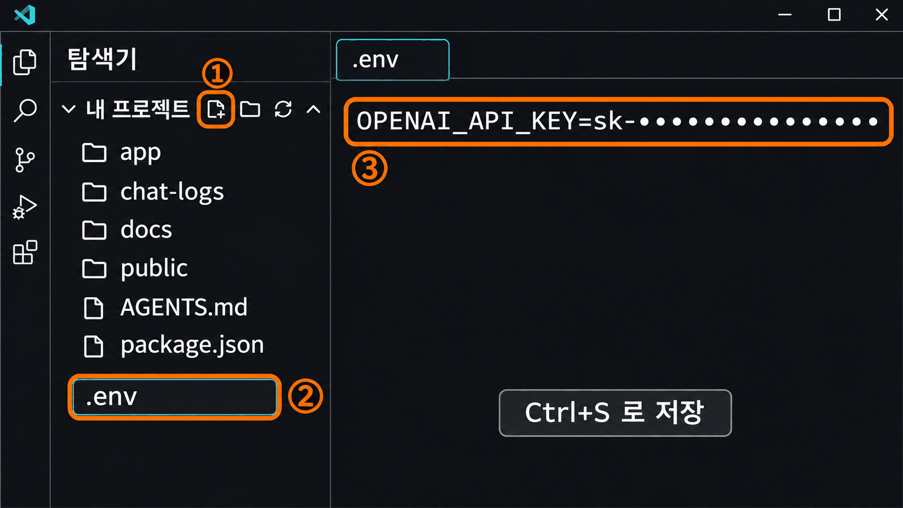
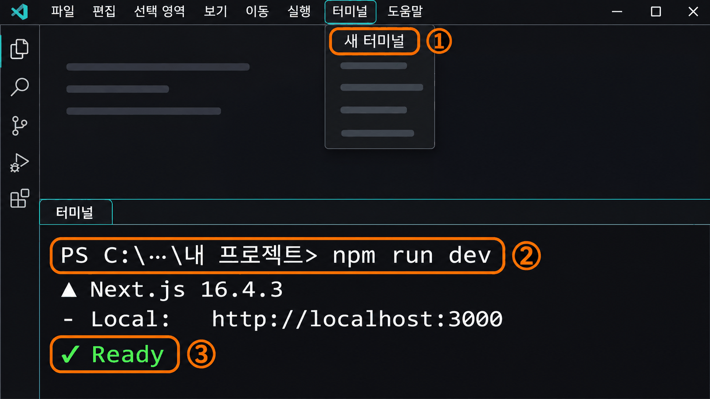
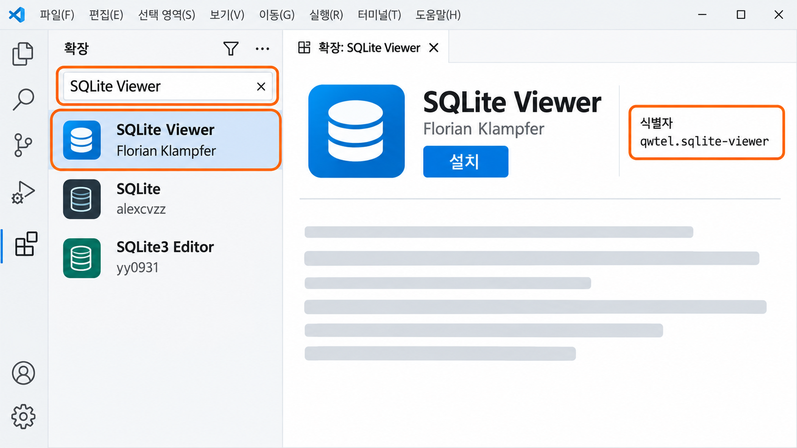

프레임워크란?什么是框架？
Codex와 함께 일하는 규칙을 정합니다.装好 Codex，把自己的项目转换成 Next.js 这个框架的项目，
再定好和 Codex 一起工作的规则。
10회부터는 VS Code 안의 Codex와 함께 만든다从第 10 次课起，和 VS Code 里的 Codex 一起做 실습实践
VS Code 안에서 쓰는 Codex와 함께 서비스를 만듭니다. 터미널에 명령을 치지 않고 VS Code 옆 창에서 대화하며, 로그인은 API 키 방식으로 해 봅니다. 다른 일보다 먼저 설치합니다.和 VS Code 里的 Codex 一起做服务。不用在终端里敲命令，而是在 VS Code 旁边的窗口里对话；登录用 API 密钥的方式来试试。先于其他事情安装它。
- VS Code 왼쪽 활동 막대에서 확장(
Ctrl+Shift+X)을 열고 검색칸에Codex를 입력한다.在 VS Code 左侧活动栏打开扩展（Ctrl+Shift+X），在搜索框输入Codex。 - Codex – OpenAI’s coding agent(게시자 OpenAI)를 누르고, 설명 화면의 식별자가
openai.chatgpt인지 본 뒤 설치를 누른다. 이것 하나만 설치하면 되고, 다른 프로그램은 따로 깔지 않는다.点 Codex – OpenAI’s coding agent（发布者 OpenAI），确认说明画面里的 식별자（扩展 ID）是openai.chatgpt，再点 설치（安装）。只装这一个就行，不用另外装别的程序。

Codex 창을 열고 API 키로 로그인한다打开 Codex 窗口，用 API 密钥登录 (이어서)（续）
설치가 끝나면 Codex 창을 열어 로그인합니다. 「ChatGPT로 로그인」이 아니라 API 키 사용을 고릅니다.装好后打开 Codex 窗口登录。选 API 키 사용，不选“ChatGPT로 로그인”。
- ① 편집기 창 오른쪽 위의 Codex 단추(OpenAI 꽃 모양)를 누른다. 왼쪽 활동 막대에는 생기지 않는다. ② 오른쪽 창 위 탭에서 「채팅」이 아니라 Codex를 고른다.① 点编辑器窗口右上角的 Codex 按钮（OpenAI 花朵图标）。左侧活动栏里不会出现。② 在右侧窗口上方的标签里选 Codex，而不是“채팅”（聊天）。
- ③ API 키 사용 → ④ 「OpenAI API 키를 입력하세요」 칸에 받은 내 키를 붙여 넣고 확인. 안내 화면이 나오면 계속을 누르고, 아래에 대화 입력칸이 보이면 끝이다.③ API 키 사용 → ④ 在“OpenAI API 키를 입력하세요”（请输入 OpenAI API 密钥）框里粘贴自己拿到的密钥，点 확인（确定）。出现说明画面就点 계속（继续），下面出现对话输入框就完成了。

쓴 만큼 요금이 나갑니다. 키는 로그인 칸에만 붙여 넣고, 파일 · 메신저 · 사진이나 프로젝트 폴더에 두지 않습니다. 로그인한 키는 내 PC의 사용자 폴더에 따로 보관되어 제출 ZIP에 들어가지 않습니다.用多少付多少。密钥只贴在登录框里，不放进文件 · 聊天软件 · 照片或项目文件夹。登录的密钥另存在用户文件夹里，不会进提交的 ZIP。
Windows 설정까지 마쳐야 Codex가 파일을 고칠 수 있다完成 Windows 设置后，Codex 才能改文件 (이어서)（续）
로그인하면 Codex 창 아래쪽에 「계속 진행하려면 Windows 설정을 마치세요」 카드가 뜹니다. 이 설정은 Codex가 내 PC에서 파일을 만들고 명령을 안전하게 실행할 공간을 만드는 일입니다. 마치지 않으면 대화는 되지만 파일을 고치지 못합니다.登录后，Codex 窗口下方会出现“계속 진행하려면 Windows 설정을 마치세요”（请完成 Windows 设置以继续）卡片。这个设置是为 Codex 在自己电脑上新建文件、安全执行命令准备空间。不完成的话能对话，但改不了文件。
- ① 카드의 계속을 누른다.① 点卡片上的 계속（继续）。
- ② Windows 「사용자 계정 컨트롤」 창이 뜨면 예를 누른다. 관리자 암호를 묻거나 실패하면 손을 든다(부록 「Codex에서 막힐 때」).② 弹出 Windows“사용자 계정 컨트롤”（用户账户控制）窗口时点 예（是）。要求管理员密码或失败时举手（附录“在 Codex 里卡住时”）。
- ③ 「Windows 설정 마무리 중」이 몇 분 걸린다. 「Windows 설정이 완료되었습니다」가 나오면 끝이다.③ “Windows 설정 마무리 중”（正在完成 Windows 设置）要几分钟。出现“Windows 설정이 완료되었습니다”（Windows 设置已完成）就好了。

Codex에게 어디까지 맡길지 — 권한을 고른다让 Codex 做到哪一步 — 选择权限 (이어서)（续）
Codex는 내 프로젝트 폴더의 파일을 직접 고치고 명령도 실행합니다. 어디까지 묻지 않고 하게 할지는 입력칸 아래 권한 단추로 정합니다.Codex 会直接改项目文件夹里的文件、执行命令。不问就做到哪一步，用输入框下面的权限按钮来定。
| 권한 단추에서 고르는 것权限按钮里的选项 | Codex가 하는 일Codex 做的事 | 수업에서课上 |
|---|---|---|
| 승인 요청승인 요청 | 프로젝트 폴더 안은 고치고, 폴더 밖 · 인터넷은 항상 묻는다（请求批准）改项目文件夹里的；文件夹外 · 上网每次都问 | 이것만 쓴다只用它 |
| 나 대신 승인나 대신 승인 | 위험해 보이는 일만 묻고 나머지는 스스로 승인 · 요금이 더 든다（替我批准）只问危险的事 · 更费钱 | 쓰지 않는다不用 |
| 전체 권한전체 권한 | 묻지 않고 인터넷과 컴퓨터의 모든 파일을 쓴다（完全权限）不问就用网络和所有文件 | 쓰지 않는다不用 |

Codex가 「샌드박스 밖에서 실행할까요?」라고 물으면, 서비스 켜기(npm run dev)일 때만 「한 번만 허용」합니다. 다른 명령이면 「거부」하고 왜 필요한지 묻습니다.问要不要在沙盒外执行时，只有 npm run dev 才点“한 번만 허용”，其他命令点“거부”（拒绝）。
프레임워크는 여러 사람이 함께 만들기 위해 생겼다框架是为了让很多人一起做而产生的 핵심核心
4-1에서 그래프를 그릴 때 matplotlib이라는 라이브러리를 가져다 썼습니다. 필요한 기능 묶음을 골라 쓴 것입니다. 그런데 서비스는 보통 혼자 만들지 않습니다. 여러 사람이 각자 방식대로 만들면 서로 만든 것을 이어 붙이거나 고치기 어렵습니다. 그래서 개발자들은 서비스 전체의 뼈대와 「무엇을 어디에 두고, 누가 무엇을 맡는다」는 약속을 미리 정해 두었습니다. 이것이 프레임워크입니다.4-1 画图表时，我们拿来用了一个叫 matplotlib 的库，就是挑需要的功能包来用。可服务通常不是一个人做的。很多人各按各的做法做，彼此做的东西就很难接起来、也很难修改。所以开发者们把整个服务的骨架，连同“什么放在哪里、谁负责什么”的约定都事先定好了。这就是框架。
| 라이브러리 (4회)库（第 4 次课） | 프레임워크 (10회부터)框架（第 10 次课起） | |
|---|---|---|
| 무엇是什么 | 필요한 기능을 골라 쓰는 묶음挑需要的功能来用的功能包 | 서비스 전체의 뼈대와 약속整个服务的骨架和约定 |
| 누가 이끄나谁来主导 | 필요할 때 가져다 쓴다需要时拿来用 | 약속대로 채워 넣으면 프레임워크가 움직인다照约定填进去，框架来运转 |
| 예例子 | matplotlib · pandasmatplotlib · pandas | Next.jsNext.js |
바이브코딩으로 혼자 만들어도, 약속은 필요하다就算用氛围编程一个人做，也需要约定 핵심核心
바이브코딩이 생기면서 이제 혼자서도 서비스를 만들 수 있게 되었습니다. 하지만 그것은 개인 단위 프로젝트일 때의 이야기입니다. 실제 서비스는 여러 사람이 함께 만들고 오래 고쳐 나갑니다. 그리고 우리도 사실 혼자가 아닙니다. AI, 선생님, 짝이 같은 프로젝트를 함께 봅니다. 그래서 이번 학기 내내 약속을 하나씩 만들어 왔고, 오늘 내 프로젝트를 변환할 Next.js도 그 약속 가운데 하나입니다.有了氛围编程（vibe coding），现在一个人也能做服务了。但那只是个人规模项目的情况。真正的服务是很多人一起做、长期修改的。而且我们其实也不是一个人：AI、老师、同桌都在一起看同一个项目。所以这学期我们一直在一个个地定约定，今天要把自己的项目转换过去的 Next.js 也是其中之一。
| 이번 학기의 약속这学期的约定 | 언제什么时候 | 무엇을 정했나定了什么 |
|---|---|---|
PRD.mdPRD.md | 6~8회第 6~8 次课 | 누구를 위해 무엇을 만들지为谁做什么 |
| 표와 열表和列 | 7회第 7 次课 | 기록이 어떤 모양으로 남는지记录以什么样子留下 |
AGENTS.mdAGENTS.md | 8-28-2 | 이 폴더에서 AI가 먼저 읽고 지킬 규칙在这个文件夹里 AI 先读、要遵守的规则 |
09_development_plan.md09_development_plan.md | 9회第 9 次课 | 무엇부터 만들고, 무엇을 바꿨는지先做什么、改了什么 |
10_api_promise.md10_api_promise.md | 10회第 10 次课 | 화면과 API가 주고받을 것画面和 API 之间要来回传的东西 |
| 프레임워크 · Next.js框架 · Next.js | 10회부터第 10 次课起 | 서비스를 만드는 뼈대와 규칙做服务的骨架和规则 |
실제 회사에서도 서비스는 기획 → 설계 → 개발 → 테스트 → 출시 · 운영 순서로 만듭니다. 이 흐름을 「소프트웨어 개발 생명주기」라고 부릅니다. 기획자 · 디자이너 · 개발자 · 테스터가 이 순서를 함께 알고 있어서, 「지금은 테스트 단계」라고 말하면 누가 무엇을 할 차례인지 바로 압니다. 이번 학기도 같은 순서로 왔습니다 — 기획(6회) → 데이터와 PRD(7~8회) → 점검 · 계획(9회) → 개발(10~11회) → 테스트(12회) → 제출(13회). 실제 현장에서는 이 순서를 한 번만 가지 않고, 기능 하나씩 작게 여러 번 되풀이합니다. 11회에 기능 하나마다 계획서에 쓰고 → 만들고 → 세 번 확인하는 것이 바로 그 방식입니다.真实的公司里，服务也按 策划 → 设计 → 开发 → 测试 → 上线 · 运营 的顺序做，这叫“软件开发生命周期”。大家都知道这个顺序，一说“现在是测试阶段”，就知道轮到谁做什么。这学期也是这个顺序：策划（6）→ 数据和 PRD（7~8）→ 检查 · 计划（9）→ 开发（10~11）→ 测试（12）→ 提交（13）。现场不是只走一遍，而是一个功能一个功能小步反复。第 11 次课每个功能都“写计划 → 做 → 确认三次”，就是这种方式。
기능마다 맞는 약속이 따로 있다不同的功能有各自合适的约定 핵심核心
AI에게 「만들어 줘」라고만 하면 대개 Next.js를 고릅니다. 하지만 기능마다 더 잘 맞는 프레임워크와 도구가 있습니다. 이것을 알면 AI의 첫 선택을 그대로 받지 않고 「이 기능에 맞는 것을 이유와 함께 골라 줘」라고 물을 수 있습니다. 9-1에서 AI가 PRD의 [점검 3] 주석 「맞는 틀」 줄에 적은 이름들이 바로 그런 다른 약속들입니다.只说“帮我做”，AI 大多会选 Next.js。但不同功能各有更合适的框架和工具。知道这一点，就能不照单全收 AI 的第一选择，而是问“请为这个功能挑合适的，并说明理由”。9-1 时 AI 在 PRD 的 [점검 3]（检查 3）注释“맞는 틀”（合适的框架）一行里写的名称，就是这样的其他约定。
| 만들고 싶은 것想做的东西 | 자주 쓰는 프레임워크 · 도구常用的框架 · 工具 |
|---|---|
| 3D 화면 · 게임 / 2D 게임3D 画面 · 游戏 / 2D 游戏 | three.js · 게임 엔진 / Phaserthree.js · 游戏引擎 / Phaser |
| 소리 · 음악 분석声音 · 音乐分析 | Python 소리 분석 도구Python 的声音分析工具 |
| 휴대폰 앱手机 App | React Native · FlutterReact Native · Flutter |
- 바이브코딩에서 가장 많이 쓰는 프레임워크입니다. AI에게 웹 서비스를 만들어 달라고 하면 대부분 Next.js로 만듭니다. 많이 쓰이는 만큼 AI도 잘 알고, 막혔을 때 찾아볼 자료도 많습니다.这是氛围编程（vibe coding）里用得最多的框架。让 AI 做网页服务，它大多会用 Next.js 来做。用的人多，AI 也就熟悉，卡住时能查的资料也多。
- 화면(프론트엔드)과 기록을 저장하는 부분(백엔드)을 한 프로젝트에서 함께 만듭니다. 그래서 폴더 하나를 ZIP 하나로 묶어 제출할 수 있습니다.画面（前端）和保存记录的部分（后端）在同一个项目里一起做。所以把一个文件夹打包成一个 ZIP 交上来就可以。
- 모두 같은 프레임워크를 쓰면 실행하고 확인하는 방법이 같습니다. 그래서 선생님이 함께 봐 주고 평가하기도 쉽습니다.大家都用同一个框架，运行和确认的方法就一样。所以老师也容易一起看、一起评价。
같이 일하는 도중에 약속을 바꾸면 모두가 엉킵니다. 써 보고 싶은 다른 프레임워크는 계획 6항 「수업 뒤로 미룬 것」에 적어 두고, 13회 뒤에 스스로 해 봅니다.一起做事途中换约定，大家都会乱。想试的其他框架写进计划第 6 项“수업 뒤로 미룬 것”（推到课程之后的），第 13 次课后自己试。
내 프로젝트를 Codex가 그 자리에서 Next.js 프로젝트로 변환하게 한다让 Codex 把自己的项目就地转换成 Next.js 项目 실습实践
6~9회에 만든 내 프로젝트(목업 · PRD · 계획)를 오늘부터 13회까지 쓸 Next.js 프로젝트로 변환합니다. 새 폴더를 만들지 않고 지금 쓰던 폴더가 그대로 바뀝니다. 변환은 Codex가 하지만, 무엇을 시키는지는 여러분이 알고 보내야 합니다. 아래 변환 요청을 처음부터 끝까지 읽고, 뜻을 모르는 줄이 있으면 먼저 묻습니다.把第 6~9 次课做的自己的项目（模型 · PRD · 计划）转换成从今天用到第 13 次课的 Next.js 项目。不新建文件夹，现在用的文件夹直接变过去。转换由 Codex 来做，但让它做什么，大家要自己弄懂再发。把下面的转换请求从头到尾读一遍，有看不懂的行就先问。
- VS Code에 평소 작업하던 내 프로젝트 폴더가 열려 있는지 본다. 탐색기에
PRD.md·mockup이 보이면 된다. 닫혀 있으면 파일 → 폴더 열기로 연다.看 VS Code 里是否打开着平时做的自己的项目文件夹。资源管理器里能看到PRD.md·mockup就对了。关着的话用 파일 → 폴더 열기（文件 → 打开文件夹）打开。 - Codex 창 위쪽의 새 대화(연필 모양)를 누르고, 아래 요청을 끝까지 읽은 뒤 복사 → Codex 입력칸에 붙여 넣고 보낸다.点 Codex 窗口上方的새 대화（新对话，铅笔图标），把下面的请求读完后点복사（复制）→ 粘贴到 Codex 输入框发送。
다음 쪽의 요청에는 코드가 없습니다. 번호마다 Codex가 할 일이 하나씩 적혀 있습니다 — 원래 파일 남기기, 버전 맞추기, 문서 정리, 목업을 Next.js 화면으로 바꾸기, 대화 기록 정리, 설치. 프레임워크와 버전만 맞추고, 나머지 규칙은 필요한 때에 하나씩 더합니다.下一页的请求里没有代码。每个编号写着 Codex 要做的一件事 — 留下原文件、统一版本、整理文档、把模型变成 Next.js 画面、整理对话记录、安装。这里只统一框架和版本，其余规则到需要时再一条条加。
변환 요청을 한 줄씩 읽고 보낸다把转换请求一行行读完再发 (이어서)（续）
아래가 변환 요청 전부입니다. 1~10번을 차례로 읽으며 Codex가 무엇을 할지 머릿속으로 따라가 봅니다. 특히 5번은 내 목업이 어떤 화면으로 바뀌는지, 3번은 어떤 버전으로 맞추는지입니다. 다 읽었으면 복사를 눌러 Codex 입력칸에 붙여 넣고 보냅니다.下面就是转换请求的全部。按顺序读第 1~10 条，在脑子里跟着想一想 Codex 要做什么。特别是第 5 条说的是自己的模型会变成什么样的画面，第 3 条说的是统一成哪个版本。读完就点복사（复制），粘贴到 Codex 输入框发送。
지금 VS Code에서 연 이 폴더는 내가 6~9회에 만든 프로젝트야(목업 · PRD · 계획 · AGENTS.md · 대화 기록). 이 폴더를 그 자리에서 Next.js 프로젝트로 변환해 줘. 새 폴더는 만들지 마. 1. 이미 package.json이 있으면 아무것도 하지 말고 멈춰서 알려 줘. 2. 변환하기 전에 지금 있는 파일과 폴더를 모두 .before-nextjs 폴더에 그대로 복사해 둬. 이 폴더는 이후에 고치거나 지우지 마. 3. 버전은 Next.js 16.4.3, React 19.3.1로 맞추고, JavaScript와 app 폴더 방식으로 만들어 줘. TypeScript · Tailwind는 쓰지 마. 스타일은 목업의 CSS를 그대로 살려 줘. 요청을 받는 자리(API)를 볼 수 있게 app/api/hello/route.js 파일만 만들어 두고, 안의 내용은 비워 둬. 4. 내 문서(PRD.md · 09_development_plan.md 같은 .md · .txt 파일)와 mockup 폴더는 docs 폴더로 옮겨 줘. 내용은 고치지 마. 5. 내 목업을 Next.js 화면으로 변환해 줘. 디자인(HTML · CSS)은 목업과 똑같이 보이게 하고, 목업의 JS 동작(버튼 · 화면 전환 · 입력)은 Next.js에 맞게 바꿔서 똑같이 움직이게 해 줘. 원본 docs/mockup은 고치지 마. 화면 파일(.html)이 여러 개면 최신 버전을 변환해 줘. 이름에 v1 · v2 같은 버전이 있으면 가장 높은 버전, old처럼 옛것 표시가 있으면 빼고, 그래도 모르겠으면 가장 최근에 고친 파일로. 어느 파일로 했는지 알려 줘. 목업이 쓰던 라이브러리(three.js 같은)는 계속 쓸 수 있게 하고, 새로 설치해야 하면 이름과 이유를 먼저 말하고 내 허락을 받아. 6. AI대화기록.md와 OpenCode 세션 파일은 chat-logs/opencode-logs로 옮겨 줘. 그 안에 sk-로 시작하는 키가 보이면 sk-***로 가리고 몇 군데였는지만 알려 줘. 7. AGENTS.md는 내가 만든 규칙 그대로 둬. 대화 기록을 남기는 곳만 chat-logs/codex-logs/AI대화기록.md로 고쳐 줘. OpenCode에만 맞는 규칙이 있으면 지우지 말고 알려만 줘. 8. .gitignore에 node_modules, .next, .env*, .before-nextjs를 넣어 줘. 9. npm install까지 해 줘. 서비스를 켜는 것은 키를 넣은 뒤에 따로 부탁할게. 10. 끝나면 짧게 알려 줘: 바뀐 것, docs로 옮긴 것, 목업에서 흉내였던 곳(새로고침하면 사라지는 것 · 미리 넣은 예시 값 · 눌러도 아무 일 없는 버튼).
现在 VS Code 打开的这个文件夹，是我第 6~9 次课做的项目（模型 · PRD · 计划 · AGENTS.md · 对话记录）。 请把这个文件夹就地转换成 Next.js 项目。不要新建文件夹。 1. 如果已经有 package.json，什么都别做，停下告诉我。 2. 转换之前，把现在所有的文件和文件夹原样复制到 .before-nextjs 文件夹。以后不要改也不要删这个文件夹。 3. 版本用 Next.js 16.4.3、React 19.3.1，用 JavaScript 和 app 文件夹方式做。不要用 TypeScript · Tailwind。样式保留模型原来的 CSS。 为了能看到接收请求的位置（API），只建一个 app/api/hello/route.js 文件，里面的内容空着。 4. 我的文档（PRD.md · 09_development_plan.md 这类 .md · .txt 文件）和 mockup 文件夹移到 docs 文件夹。内容不要改。 5. 把我的模型转换成 Next.js 画面。设计（HTML · CSS）要和模型看起来一模一样，模型的 JS 动作（按钮 · 画面切换 · 输入）改成适合 Next.js 的写法，动起来也一模一样。原件 docs/mockup 不要改。 画面文件（.html）有好几个时，转换最新版本：名字里有 v1 · v2 这样的版本就用最高版本，有 old 这类旧版标记的不要，还分不出来就用最近改过的文件。告诉我用了哪个文件。 模型用过的库（像 three.js）要能继续用；需要新安装的话，先说名字和理由，得到我的同意。 6. AI대화기록.md 和 OpenCode 会话文件移到 chat-logs/opencode-logs。里面如果有 sk- 开头的密钥，改成 sk-*** 遮住，只告诉我遮了几处。 7. AGENTS.md 保持我定的规则。只把记录对话的位置改成 chat-logs/codex-logs/AI대화기록.md。只适用于 OpenCode 的规则不要删，告诉我就行。 8. 在 .gitignore 里加上 node_modules、.next、.env*、.before-nextjs。 9. 做到 npm install 为止。启动服务等我放好密钥后再另外请你做。 10. 完成后简短告诉我：改了什么、移到 docs 的东西、模型里属于模拟的地方（刷新就没了的 · 预先放好的示例值 · 按了没反应的按钮）。
Codex가 변환하는 동안 — 묻는 카드와 보고를 읽는다Codex 转换时 — 读询问卡片和报告 (이어서)（续）
Codex는 요청에 적힌 순서대로 변환합니다. 원래 파일은 .before-nextjs에 남기고, 목업은 같은 모양의 Next.js 화면으로 바꿉니다. AGENTS.md는 여러분이 만든 규칙 그대로이고 대화 기록을 남기는 곳만 바뀝니다. 몇 분 걸리니 기다리는 동안 3절의 SQLite Viewer를 먼저 설치해도 됩니다.Codex 按请求的顺序转换。原文件留在 .before-nextjs，模型会变成一模一样的 Next.js 画面。AGENTS.md 保持大家自己定的规则，只改对话记录的位置。要花几分钟，等的时候可以先装第 3 节的 SQLite Viewer。
npm install(인터넷)처럼 묻는 카드가 뜬다. 명령을 읽고 한 번만 허용을 누른다.像npm install（联网）这样会出现询问卡片。读一下命令，点한 번만 허용（只允许一次）。- 목업이 쓰던 라이브러리(three.js 같은)를 새로 설치하자고 하면 이름과 이유를 읽는다. 목업에서 쓰던 것이면 허락한다.提议新装模型用过的库（像 three.js）时，读名字和理由，是模型里用过的就同意。
- 끝나면 보고를 읽는다. 어느 화면 파일을 변환했는지,
docs로 옮긴 것, 목업에서 흉내였던 곳 목록이 나온다.结束后读报告：转换了哪个画面文件、移到docs的东西、模型里模拟的地方清单。
| 변환하면 생기는 것转换后会有的 | 무엇是什么 |
|---|---|
app\app\ | 내 목업이 바뀐 Next.js 화면(page.js와 CSS)과 빈 API 자리(api\hello\route.js)模型变成的 Next.js 画面（page.js · CSS）+ 空的 API 位置（api\hello\route.js） |
docs\docs\ | 내 문서를 모두 모은 곳 — PRD · 계획 · 메모 · 목업 원본自己的文档都放在这里 — PRD · 计划 · 笔记 · 模型原件 |
package.jsonpackage.json | Next.js 16.4.3 · React 19.3.1처럼 이 프로젝트가 쓰는 것과 버전项目用的东西和版本 · Next.js 16.4.3 · React 19.3.1 |
chat-logs\chat-logs\ | 9회까지의 대화 기록(opencode-logs), Codex 대화 기록(codex-logs)到第 9 次课的记录（opencode-logs）· Codex 记录（codex-logs） |
AGENTS.mdAGENTS.md | 내가 만든 규칙 그대로 · 대화 기록 위치만 chat-logs로自己定的规则原样 · 只把对话记录位置改到 chat-logs |
.before-nextjs\.before-nextjs\ | 변환 전 원래 파일 그대로 · 제출하지 않는다转换前的原文件原样保存 · 不提交 |
변환이 끝나면 가장 먼저 .env 파일을 만든다转换一完成，先建 .env 文件 (이어서)（续）
변환이 끝나면 가장 먼저 키를 넣습니다. Codex 로그인에 쓴 키를 프로젝트의 .env 파일에도 적어 두면, 서비스 안에서 진짜 AI를 쓰고 서비스에 필요한 그림도 Codex에게 만들어 달라고 할 수 있습니다. .env는 이 프로젝트만 쓰는 비밀 설정 파일입니다. 먼저 이 파일을 만듭니다.转换完成后，第一件事是放密钥。把登录 Codex 用的密钥也写进项目的 .env 文件，就能在服务里用真正的 AI，也能让 Codex 帮忙做服务要用的图片。.env 是只给这个项目用的秘密设置文件。先把这个文件建好。
- 탐색기 맨 위 내 프로젝트 이름 줄의 새 파일 아이콘을 누르고 이름을
.env로 적은 뒤 Enter. 점으로 시작하는 이름이다.点资源管理器最上方自己项目名那一行的新建文件图标，名字写.env后按 Enter。是以点开头的名字。

.env에 설명과 키 한 줄을 넣고 저장한다在 .env 里放说明和一行密钥，再保存 (이어서)（续）
새로 만든 .env가 편집기에 열려 있습니다. 아래 상자에는 이 파일이 무엇인지 적은 설명 줄(#으로 시작)과 키를 넣을 줄이 함께 들어 있습니다. # 줄은 설명으로만 읽히므로 그대로 둬도 됩니다.新建的 .env 已经在编辑器里打开了。下面的框里有说明这个文件是什么的说明行（以 # 开头），还有放密钥的那一行。# 开头的行只当说明来读，留着也没关系。
# .env — 이 프로젝트만 쓰는 비밀 설정 파일이다. # 제출하지 않고, 다른 사람에게 보여 주지 않는다. # 서비스 안의 진짜 AI와 그림 만들기가 아래 키를 쓴다. # = 바로 뒤에 받은 OpenAI 키를 빈칸 · 따옴표 없이 붙여 넣고 # Ctrl+S로 저장한다. OPENAI_API_KEY=
# .env — 只给这个项目用的秘密设置文件。 # 不提交，也不给别人看。 # 服务里真正的 AI 和做图片都会用下面的密钥。 # 在 = 后面直接粘贴拿到的 OpenAI 密钥（不加空格 · 引号），按 Ctrl+S 保存。 OPENAI_API_KEY=
- 위 상자의 복사를 누르고
.env에 붙여 넣는다.点上面框的복사（复制），粘贴进.env。 OPENAI_API_KEY=바로 뒤에 받은 키를 빈칸 · 따옴표 없이 붙여 넣고Ctrl+S로 저장한다.在OPENAI_API_KEY=后面直接粘贴拿到的密钥（不加空格 · 引号），按Ctrl+S保存。
키는 Codex 로그인 칸과 .env 두 곳에만 둡니다. Codex 대화창 · 메신저 · 다른 파일에 붙여 넣지 않습니다. .env는 제출하지 않습니다.密钥只放在 Codex 登录框和 .env 两处。不要贴到 Codex 对话框 · 聊天软件 · 其他文件里。.env 不提交。
Codex에게 서비스를 켜게 하고, 내 화면을 연다让 Codex 启动服务，打开自己的画面 (이어서)（续）
이제 서비스를 켜서 내 목업이 Next.js 화면으로 열리는지 봅니다. Codex는 명령을 샌드박스라는 안전한 칸 안에서 실행하는데, 그 안에서 켠 서비스는 브라우저에서 열리지 않습니다. 그래서 서비스를 켤 때만 샌드박스 밖에서 실행하도록 승인을 요청하게 합니다.现在启动服务，看自己的模型是不是作为 Next.js 画面打开了。Codex 会在叫沙盒的安全空间里执行命令，可在里面启动的服务，浏览器打不开。所以只有启动服务时，让它请求批准在沙盒外运行。
서비스를 켜 줘(npm run dev). 샌드박스 안에서 켜면 브라우저가 열리지 않으니, 샌드박스 밖에서 실행하도록 승인을 요청해 줘. 대화가 끝나도 꺼지지 않게 켜 두고, localhost:3000이 실제로 열리는지 확인한 뒤 주소를 알려 줘.
请启动服务（npm run dev）。 在沙盒里启动的话浏览器打不开，所以请请求批准在沙盒外运行。 对话结束后也别关掉，确认 localhost:3000 真的能打开后，告诉我地址。
npm run dev를 샌드박스 밖에서 실행하겠다는 카드가 뜨면 명령이npm run dev인지 보고 한 번만 허용을 누른다.出现要在沙盒外执行npm run dev的卡片时，看清命令是npm run dev，点한 번만 허용（只允许一次）。- 브라우저에서
localhost:3000을 연다. 내 목업과 같은 화면이 열리고, 버튼이 목업처럼 움직이면 된다.在浏览器打开localhost:3000。出现和模型一样的画面、按钮像模型一样动就对了。
화면이 열리지 않으면 터미널에서 직접 켠다画面打不开时，在终端里自己启动 (이어서)（续）
Codex가 켰다고 했는데 localhost:3000이 열리지 않으면, 서비스를 터미널에서 직접 켭니다. 이때 켠 터미널은 서비스가 쓰고 있으니 그대로 두고, 거기에는 다른 것을 치지 않습니다.Codex 说已经启动了，localhost:3000 却打不开的话，就在终端里自己启动服务。这时启动服务的终端被服务占着，保持不动，不要往里输别的。
- 위쪽 메뉴 터미널 → 새 터미널을 누른다.点上方菜单터미널 → 새 터미널（终端 → 新建终端）。
- 아래에 열린 터미널에
npm run dev를 입력하고 Enter.Ready가 보이면 브라우저에서 다시 연다.在下面打开的终端里输入npm run dev按 Enter。看到Ready后在浏览器里再打开。

10-2에서 쓸 SQLite Viewer를 미리 설치해 둔다提前装好 10-2 要用的 SQLite Viewer 실습实践
내 서비스의 기록은 data\app.db 파일에 쌓입니다. 이 파일은 기본 편집기로 읽을 수 없으니, 표와 행을 보여 주는 확장을 오늘 미리 설치합니다. 2회에 Python 확장을 설치한 것과 같은 방법입니다. 다만 검색하면 이름이 비슷한 확장이 여럿 나오므로 아래 그림의 주황 테두리처럼 확장 ID를 꼭 확인합니다.自己服务的记录会存进 data\app.db 文件。这个文件用默认编辑器读不了，所以今天先装好一个能显示表和行的扩展。方法和第 2 次课安装 Python 扩展一样。不过搜索时会出现好几个名字相似的扩展，一定要像下图橙色框那样确认扩展 ID。
- VS Code 왼쪽 활동 막대에서 확장(네모 네 개 모양,
Ctrl+Shift+X)을 연다.在 VS Code 左侧活动栏打开扩展（四个小方块的图标，Ctrl+Shift+X）。 - 검색칸에
SQLite Viewer를 입력하고 목록에서 SQLite Viewer를 누른다.在搜索框输入SQLite Viewer，在列表里点 SQLite Viewer。 - 설명 화면의 식별자(Identifier)가
qwtel.sqlite-viewer인지 보고 설치(Install)를 누른다. 단추가 제거로 바뀌면 끝이다.确认说明画面里的 식별자（Identifier，扩展 ID）是qwtel.sqlite-viewer，再点 설치（Install，安装）。按钮变成 제거（卸载）就完成了。

프레임워크의 약속이 눈에 보인다 — 폴더가 곧 사이트 주소다看得见的框架约定 — 文件夹就是网站地址 핵심核心
1절에서 프레임워크는 「무엇을 어디에 두는지」 정해 둔 약속이라고 했습니다. Next.js에서는 그 약속이 눈에 보입니다. app 폴더 안에 파일을 어느 폴더에 두느냐가 곧 브라우저 주소가 됩니다. 주소를 따로 정하지 않아도, 약속된 자리에 두면 Next.js가 알아서 잇습니다. 앞으로 AI가 「○○ 파일을 고치겠습니다」라고 하면 이 표에서 그 파일이 어느 주소인지 찾습니다.第 1 节说过，框架是定好“什么放在哪里”的约定。在 Next.js 里，这个约定看得见：文件放在 app 里的哪个文件夹，就是浏览器里的哪个地址。不用另外定地址，放在约定的位置，Next.js 就会自己接上。以后 AI 说“我要改 ○○ 文件”时，就在这张表里找那个文件对应哪个地址。
| 폴더 · 파일文件夹 · 文件 | 브라우저 주소浏览器地址 | 하는 일做什么 |
|---|---|---|
app\page.jsapp\page.js | localhost:3000localhost:3000 | 화면 — 내 목업을 변환한 첫 화면画面 — 由模型转换来的首页 |
app\api\hello\route.jsapp\api\hello\route.js | 아직 빈 파일还是空文件 | 요청을 받는 곳(API) 자리 — 10-2에서 채운다接收请求的地方（API）的位置 — 10-2 来填 |
app\이름\page.js를 만들면建了 app\名字\page.js 的话 | localhost:3000/이름localhost:3000/名字 | 새 화면이 그 주소에 생긴다新画面会出现在那个地址 |
lib\db.js → data\app.dblib\db.js → data\app.db | 주소 없음没有地址 | 저장 — 10-2에서 만든다保存 — 10-2 来做 |
docs\ · chat-logs\docs\ · chat-logs\ | 주소 없음没有地址 | 내 문서 · 대화 기록自己的文档 · 对话记录 |
package.json에는 변환할 때 맞춘 버전(Next.js 16.4.3 · React 19.3.1)이 적혀 있습니다. 모두 같은 버전이어야 같은 방법으로 실행하고 확인할 수 있습니다. AI가 버전을 올리거나 TypeScript · 새 폴더 구조로 바꾸자고 하면 「지금 버전과 구조 그대로 해 줘」라고 말합니다.package.json 里写着转换时定好的版本（Next.js 16.4.3 · React 19.3.1）。大家版本一样，才能用同样的方法运行和确认。AI 要升级版本、改成 TypeScript 或重搭文件夹结构时，就说“지금 버전과 구조 그대로 해 줘”（照现在的版本和结构做）。
AI에게 화면 하나를 만들게 하고, 새 주소가 생기는 것을 본다让 AI 做一个画面，看看多出的新地址 (이어서)（续）
표로 본 약속을 직접 확인합니다. 먼저 아직 없는 주소를 열어 보고, Codex에게 그 주소의 폴더에 작은 화면 하나를 만들게 합니다. 무엇을 만들지 요청에 정확히 적었기 때문에 모두 같은 화면이 나옵니다. 폴더 하나를 만들었을 뿐인데 주소가 생기는 것이 프레임워크의 약속입니다.直接确认表里看到的约定。先打开一个还不存在的地址，再让 Codex 在那个地址的文件夹里做一个小画面。要做什么在请求里写得很清楚，所以大家会看到一样的画面。只是建了一个文件夹，地址就出现了 — 这就是框架的约定。
- 브라우저 주소창에
localhost:3000/hello를 연다. 아직 그런 폴더가 없으니 「404」가 나온다.在浏览器地址栏打开localhost:3000/hello。还没有这个文件夹，所以会出现“404”。 - 아래 요청을 읽고 Codex에 보낸다. 탐색기에
app\hello\page.js가 생기면 같은 주소를 새로 고침한다.读完下面的请求发给 Codex。资源管理器里出现app\hello\page.js后，刷新同一个地址。
app/hello/page.js에 작은 화면 하나를 만들어 줘. 다른 파일은 고치지 마. - 가운데에 큰 제목: 폴더가 곧 주소 - 그 아래 글: 이 화면은 app/hello/page.js 파일에서 왔습니다. - 그 아래 버튼: 눌러 보기 — 누를 때마다 버튼 옆 숫자가 1씩 커진다(처음은 0). 꾸밈은 간단하게, 모두 가운데 정렬로 해 줘.
请在 app/hello/page.js 做一个小画面。其他文件不要改。 - 中间是大标题：폴더가 곧 주소（文件夹就是地址） - 下面一行字：이 화면은 app/hello/page.js 파일에서 왔습니다.（这个画面来自 app/hello/page.js 文件。） - 再下面一个按钮：눌러 보기（按一下）— 每按一次，按钮旁边的数字加 1（一开始是 0）。 装饰简单一点，全部居中。
- 「폴더가 곧 주소」 화면이 열리고, 「눌러 보기」를 누를 때마다 숫자가 커지면 된다. 옆 사람 화면도 같은지 본다.打开“폴더가 곧 주소”画面，每按一次“눌러 보기”数字就变大就对了。看看旁边同学的画面是不是一样。
AGENTS.md에 「계획서에 먼저 쓴다」 규칙을 더한다在 AGENTS.md 里加上“先写进计划书”的规则 실습实践
다음 시간부터 Codex가 내 프로젝트의 코드를 고칩니다. 9-2에서 계획을 문서로 남기면 지금 어디까지 왔는지, 무엇을 바꿨는지가 남는다고 했습니다. 그래서 Codex도 고치기 전에 계획서에 먼저 쓰게 합니다. 8-2에서 AGENTS.md에 규칙을 적었던 것처럼, 이 규칙을 내 AGENTS.md에 더합니다. 서비스를 켤 때와 그림을 만들 때의 약속도 함께 적어 두면 다음부터는 「서비스를 켜 줘」 · 「그림을 만들어 줘」만 보내면 됩니다. 보내기 전에 한 줄씩 읽습니다.从下一课时起，Codex 要改自己项目的代码了。9-2 说过，把计划写成文档，就能留下现在走到哪里、改了什么。所以也让 Codex 改之前先写进计划书。就像 8-2 在 AGENTS.md 里写规则那样，把这条规则加进自己的 AGENTS.md。把启动服务和做图片时的约定也一起写上，以后只发“서비스를 켜 줘”“그림을 만들어 줘”就行。发之前一行一行读。
AGENTS.md 맨 아래에 아래 세 칸을 더해 줘. 위에 있는 내 규칙은 고치지 마. ## 계획서에 먼저 쓴다 - 코드나 화면을 고치는 일을 받으면 바로 고치지 않는다. docs/09_development_plan.md 「5. 개발 순서」 맨 아래에 「### <회차>회 작업 — <이름>」으로 요청 · 고칠 파일 · 바꿀 내용 · 확인 방법 · 상태(계획)를 쉬운 말로 적고 멈춘다. - 내가 「계획서대로 진행해」라고 하면 적힌 대로만 고치고, 상태를 「완료」로 바꾼다. - 내가 고쳐 적으라고 하면 그 작업 계획만 고치고 다시 멈춘다. - 서비스 방향이 바뀌는 일이면 고칠 파일에 docs/PRD.md도 넣는다. - 7항 「내가 바꾸거나 거절한 것」은 내가 직접 쓴다. 고치지 않는다. - 찾기 · 설명 · 질문은 계획서에 쓰지 않고 대화창에서 답한다. - 「되돌려 줘」는 바로 되돌리고, 상태를 「되돌림 — 이유」로 바꾼다. ## 서비스 켜기 - 서비스를 켜거나 다시 켤 때(npm run dev)는 샌드박스 밖에서 실행하도록 승인을 요청한다. 샌드박스 안에서 켜면 브라우저가 열리지 않는다. - 대화가 끝나도 꺼지지 않게 켜고, localhost:3000이 실제로 열리는지 확인한 뒤 알려 준다. ## 그림 만들기 - 서비스에 쓸 그림은 .env의 OPENAI_API_KEY로 OpenAI 이미지 생성(imagegen 스킬의 CLI 방식)을 써서 만든다. 키는 .env에서 읽어 그 명령에만 넣고, 화면 · 답 · 다른 파일에 키 값을 쓰지 않는다.
请在 AGENTS.md 最下面加上下面三部分。上面我自己的规则不要改。
## 先写进计划书
- 接到要改代码或画面的事，不要马上改。先在 docs/09_development_plan.md “5. 开发顺序”最下面，
用“### 第<次>次课作业 — <名称>”把请求 · 要改的文件 · 要改的内容 · 确认方法 · 状态（计划）用简单的话写好，然后停下。
- 我说“照计划书进行”（계획서대로 진행해）时，只按写好的改，并把状态改成“完成”。
- 我让你改写时，只改那一条工作计划，然后再停下。
- 会改变服务方向的事，要改的文件里也放上 docs/PRD.md。
- 第 7 项“我改动或拒绝的”由我自己写。你不要改。
- 查找 · 说明 · 提问不写进计划书，在对话框里回答。
- “改回去”就马上改回去，并把状态改成“改回 — 理由”。
## 启动服务
- 启动或重启服务（npm run dev）时，请求批准在沙盒外运行。在沙盒里启动的话，浏览器打不开。
- 启动后对话结束也不要关掉，确认 localhost:3000 真的能打开后再告诉我。
## 做图片
- 服务要用的图片，用 .env 里的 OPENAI_API_KEY 调 OpenAI 图片生成（imagegen 技能的 CLI 方式）来做。密钥从 .env 读出，只放进那条命令里，不要把密钥的值写到画面 · 回答 · 其他文件里。AGENTS.md를 열고 맨 아래에 ## 계획서에 먼저 쓴다 · ## 서비스 켜기 · ## 그림 만들기가 생겼는지, 위에 있던 내 규칙이 그대로인지 본다.打开AGENTS.md，看最下面是否多了 ## 계획서에 먼저 쓴다 · ## 서비스 켜기 · ## 그림 만들기，上面自己的规则是否原样还在。
첫 계획서 작업 — AI 기능을 진짜로 만들도록 계획을 고친다第一个计划书任务 — 把计划改成真正做出 AI 功能 (이어서)（续）
9-2에서는 외부 AI를 쓰는 기능을 「수업에서는 흉내 낸다」로 정했습니다. 이제 각자 받은 키로 진짜 AI와 그림 만들기를 쓸 수 있으니 그 결정을 바꿉니다. 방금 더한 규칙대로 Codex는 계획서 5항 아래에 작업 계획을 먼저 쓰고 멈춥니다. 계획서를 Ctrl+Shift+V로 읽고, 맞으면 「계획서대로 진행해」를 보냅니다.9-2 时把用外部 AI 的功能定成了“수업에서는 흉내 낸다”（课上模拟）。现在每个人都能用拿到的密钥使用真正的 AI 和做图片，所以要改这个决定。按刚加的规则，Codex 会先在计划书第 5 项下面写工作计划，然后停下。用 Ctrl+Shift+V 读计划书，对了就发“계획서대로 진행해”。
9-2에서는 외부 AI를 쓰는 기능을 「수업에서는 흉내 낸다」로 정했어. 이제 .env의 키로 진짜 AI와 그림 만들기를 쓸 수 있어서, AI 기능도 수업에서 진짜로 만들기로 바뀌었어. docs/09_development_plan.md와 docs/PRD.md를 읽고, AI나 그림 만들기 때문에 「흉내 낸다」나 「13회 뒤 스스로」로 정한 기능을 찾아 줘. 그 기능을 「수업에서 만든다」로 바꾸고 5항 개발 순서에서 언제 만들지 다시 정하는 일을, 작업 계획으로 계획서 5항 아래에 적고 멈춰 줘. - 10회의 핵심 흐름은 그대로 두고, AI 기능은 11회부터의 순서에 넣어 줘. - 고칠 파일에 docs/PRD.md도 넣어 줘. 7항은 고치지 마. - 그런 기능이 없으면 없다고만 알려 줘.
9-2 时把用外部 AI 的功能定成了“课上模拟”。现在能用 .env 里的密钥接上真正的 AI 和做图片了，所以 AI 功能也改成在课上真正做出来。 请读 docs/09_development_plan.md 和 docs/PRD.md，找出因为 AI 或做图片而定成“课上模拟”或“第 13 次课后自己做”的功能。 把这些功能改成“课上做”，并在第 5 项开发顺序里重新定什么时候做，把这件事作为工作计划写在计划书第 5 项下面，然后停下。 - 第 10 次课的核心流程保持不变，AI 功能放进第 11 次课以后的顺序里。 - 要改的文件里也放上 docs/PRD.md。第 7 项不要改。 - 没有这样的功能，就只告诉我没有。
- 계획서 1항에서 AI 기능이 「수업에서 만든다」로 바뀌고, 5항 개발 순서에 11회 이후로 들어갔는가?计划书第 1 项里 AI 功能改成“수업에서 만든다”（课上做）了吗？第 5 项开发顺序里放进第 11 次课以后了吗？
PRD.md맨 아래 「바뀐 기록」에 한 줄이 남고, 이번 작업 계획의 상태가 「완료」인가?PRD.md最下面“바뀐 기록”（修改记录）里留了一行，这次工作计划的状态是“完成”吗？
흔한 오해와 확인 문제常见误解与确认题 확인确认
오늘 한 일을 정리합니다. 오해 두 가지를 먼저 읽고, 확인 문제에 답을 먼저 말한 뒤 해설을 엽니다. 막히는 문제가 있으면 그 절로 돌아가 다시 읽습니다.整理一下今天做的事。先读两个误解，再对确认题先说出答案，然后打开解析。答不上来的，就回到那一节再读一遍。
docs\mockup에 그대로 있습니다. 앞으로 바뀌는 것은 화면 뒤에서 기록을 받고 남기는 부분입니다.Codex 会把模型转换成一模一样的 Next.js 画面。原件原样留在 docs\mockup。以后要变的是画面背后接收、保存记录的部分。.env에만 넣습니다. 대화창에 붙여 넣으면 기록에 남습니다.密钥由大家自己只放进 Codex 登录框和 .env。贴到对话框里就会留在记录中。localhost:3000/hello 화면은 어느 파일에서 왔나?localhost:3000/hello 的画面来自哪个文件？해설 보기查看解析
app\hello\page.js입니다. 폴더 이름이 그대로 주소가 됩니다. 이것이 Next.js라는 프레임워크의 약속입니다.是 app\hello\page.js。文件夹名字直接成了地址。这就是 Next.js 这个框架的约定。
도구와 틀은 준비됐다 — 다음은 API로 기록을 남긴다工具和框架都准备好了 — 接下来用 API 留下记录
오늘은 Codex를 설치하고 프레임워크라는 약속을 본 뒤, 직접 읽고 보낸 변환 요청으로 6~9회에 만든 내 프로젝트를 Next.js 프로젝트로 변환했습니다. 바로 .env에 키를 넣고, 폴더가 곧 주소가 되는 것을 직접 보고, AGENTS.md에 계획서 규칙을 더한 뒤, 그 규칙대로 AI 기능을 진짜로 만들도록 계획을 고쳤습니다. 다음 시간에 쓸 SQLite Viewer도 설치해 두었습니다.今天装好了 Codex，看了框架这个约定，再用自己读过才发的转换请求，把第 6~9 次课做的自己的项目转换成了 Next.js 项目。马上把密钥写进 .env，亲眼看了文件夹就是地址，在 AGENTS.md 里加上了计划书规则，再按这条规则把计划改成真正做出 AI 功能。还装好了下一课时要用的 SQLite Viewer。
- 13회까지 이 프로젝트 폴더에서 만든다. 서비스는 Codex에게 「서비스를 켜 줘」(샌드박스 밖 승인은 이때만), 안 되면 터미널에서
npm run dev.到第 13 次课都在这个项目文件夹里做。服务请 Codex“서비스를 켜 줘”（沙盒外批准只在这时），不行就在终端里输入npm run dev。 - Codex는 계획서 5항에 작업 계획을 먼저 쓰게 하고, 읽고 맞으면 「계획서대로 진행해」.让 Codex 先在计划书第 5 项写工作计划，读过觉得对再发“계획서대로 진행해”。
- 내 문서는
docs, 대화 기록은chat-logs. 방향이 바뀌면 PRD도 고치게 한다.自己的文档放docs，对话记录放chat-logs。方向变了就让它也改 PRD。 - 키는 Codex 로그인과
.env두 곳에만 둔다.密钥只放在 Codex 登录和.env两处。
다음 차시에는 API라는 창구를 배우고, Codex에게 내 서비스가 기억할 표를 만들게 한 뒤, 내 버튼 하나가 그 창구로 표에 기록을 남기게 합니다. 그리고 오늘 설치한 SQLite Viewer로 표 안에 행이 생기는 것을 직접 봅니다.下一课时学习 API 这个窗口，让 Codex 建好自己服务要记住的表，再让自己的一个按钮通过这个窗口把记录留进表里。然后用今天装好的 SQLite Viewer 亲眼看表里多出的行。
10-2. API와 DB 연결하기 →10-2. 连接 API 与数据库 →이럴 때는 이렇게 한다遇到这些情况就这样做 필요할 때需要时
오늘 막히는 자리는 대개 프로젝트 변환, 설치와 실행, 확장 설치입니다. 터미널에 나온 마지막 몇 줄을 읽고, 내 상황과 같은 줄을 찾아 오른쪽대로 해 봅니다. 그래도 안 되면 터미널 화면을 그대로 둔 채 손을 듭니다.今天卡住的地方，大多在转换项目、安装、运行和安装扩展上。读终端最后几行，找到和自己情况一样的那行，照右边做。还不行，就保持终端画面不动，举手。
| 변환한 화면이 목업과 다르게 보이거나 버튼이 목업처럼 움직이지 않는다转换后的画面和模型看起来不一样，或按钮不像模型那样动 | 다른 곳을 하나씩 짚어 보냅니다. 「___이 목업과 달라. docs/mockup의 원본처럼 고쳐 줘」. 한 번에 하나씩 고치고 다시 봅니다.把不一样的地方一个个指出来发：“___이 목업과 달라. docs/mockup의 원본처럼 고쳐 줘”（___和模型不一样，照 docs/mockup 原件改）。一次改一处，再看。 |
npm을 찾을 수 없다고 나온다提示找不到 npm | 2-1에서 설치한 Node.js가 없는 것입니다. PowerShell에 node --version을 입력해 숫자가 나오는지 보고, 안 나오면 손을 듭니다.是 2-1 安装的 Node.js 没有了。在 PowerShell 输入 node --version，看有没有数字，没有就举手。 |
npm install이 오래 멈춰 있다npm install 停了很久 | 교실 인터넷이 느린 것입니다. 5분까지는 기다립니다. 그동안 교과서를 읽습니다.是教室网络慢。等到 5 分钟。这段时间读课本。 |
npm run dev에서 Missing script가 나온다npm run dev 出现 Missing script | 터미널이 내 프로젝트 폴더가 아닌 곳에 있습니다. VS Code에서 연 폴더가 평소 작업하던 폴더인지 보고, 아니면 파일 → 폴더 열기로 다시 엽니다.终端不在自己的项目文件夹里。看 VS Code 打开的是不是平时做的文件夹，不是的话就用 파일 → 폴더 열기 重新打开。 |
Port 3000 is in use가 나온다出现 Port 3000 is in use | 다른 터미널에서 이미 켜져 있습니다. 그 터미널에서 Ctrl+C로 멈추거나, 나온 주소(예: localhost:3001)로 엽니다.另一个终端里已经开着了。在那个终端按 Ctrl+C 停掉，或者打开提示的地址（例：localhost:3001）。 |
| 확장 검색에 SQLite Viewer가 여러 개 나온다扩展搜索出现好几个 SQLite Viewer | 하나씩 눌러 설명 화면의 확장 ID를 봅니다. qwtel.sqlite-viewer만 설치합니다. 다른 것을 이미 설치했다면 그 확장의 제거(Uninstall)를 누릅니다.逐个点开，看说明画面里的扩展 ID。只安装 qwtel.sqlite-viewer。已经装了别的，就点那个扩展的 제거（Uninstall，卸载）。 |
| 브라우저에 「사이트에 연결할 수 없음」이 나온다浏览器显示“无法访问此网站” | 서비스가 꺼져 있습니다. Codex에 「서비스를 켜 줘」를 보내고, 그래도 안 되면 터미널에서 npm run dev를 직접 입력해 Ready를 기다립니다.服务没开着。给 Codex 发“서비스를 켜 줘”（启动服务），还不行就在终端里自己输入 npm run dev，等 Ready 出现。 |
Codex에서 막힐 때在 Codex 里卡住时 (이어서)（续）
Codex 창에서 막히면 내 PC를 고치려 하지 말고, 아래에서 같은 줄을 찾아 오른쪽대로 합니다. 키나 결제와 관계된 것은 선생님만 고칠 수 있습니다.在 Codex 窗口里卡住时，不要自己去修电脑，在下面找到一样的那行，照右边做。和密钥、付款有关的，只有老师能处理。
| Codex가 「이미 변환된 프로젝트」라며 멈춘다Codex 说“已经是转换过的项目”而停下 | package.json이 이미 있는 것입니다. 아무것도 지우지 말고 손을 듭니다. 선생님이 함께 봅니다.是已经有 package.json 了。什么都别删，举手。老师会一起看。 |
localhost:3000에 내 목업이 아니라 Next.js 기본 화면이 나온다localhost:3000 出现的是 Next.js 默认画面而不是自己的模型 | 목업 변환이 덜 된 것입니다. Codex에 「docs/mockup의 첫 화면을 같은 모양의 Next.js 화면으로 변환해서 localhost:3000에 나오게 해 줘」를 보냅니다.是模型还没转换好。给 Codex 发“docs/mockup의 첫 화면을 같은 모양의 Next.js 화면으로 변환해서 localhost:3000에 나오게 해 줘”。 |
| 설치했는데 Codex 아이콘이 안 보인다装好了却看不到 Codex 图标 | 왼쪽 활동 막대가 아니라 편집기 창 오른쪽 위에 있습니다. 그래도 없으면 Ctrl+Shift+P를 누르고 Codex: Open Codex Sidebar를 고릅니다. 오른쪽 창에 「채팅」이 보이면 옆의 Codex 탭을 누릅니다.它不在左侧活动栏，而在编辑器窗口右上角。还是没有，就按 Ctrl+Shift+P，选 Codex: Open Codex Sidebar。右侧窗口显示“채팅”的话，点旁边的 Codex 标签。 |
| Codex 로그인에서 키가 틀렸다고 나온다Codex 登录时提示密钥不对 | 앞뒤에 빈칸이 붙었거나 일부만 복사된 것입니다. 받은 키를 처음부터 끝까지 다시 복사해 붙여 넣습니다. 그래도 안 되면 손을 듭니다.是前后带了空格，或者只复制了一部分。把拿到的密钥从头到尾重新复制粘贴。还不行就举手。 |
| 「Windows 설정을 마치세요」 카드가 계속 남아 있다“请完成 Windows 设置”卡片一直不消失 | Windows 설정이 끝나지 않은 것입니다. 카드의 계속 또는 설정 재시도를 누르고, 「사용자 계정 컨트롤」 창에서 예를 누릅니다. 관리자 암호를 물으면 손을 들고, 관리자 액세스 없이 계속이 보이면 그것을 누릅니다.是 Windows 设置还没完成。点卡片上的 계속 或 설정 재시도（重试设置），在“사용자 계정 컨트롤”窗口点 예。要求管理员密码就举手；出现 관리자 액세스 없이 계속 就点它。 |
| Codex가 「한도」나 「결제」 때문에 멈췄다고 한다Codex 说因为“额度”或“付款”停下了 | 내 잘못이 아닙니다. 화면을 그대로 두고 손을 듭니다. 선생님이 키를 확인합니다.不是自己的错。保持画面不动，举手。老师会检查密钥。 |